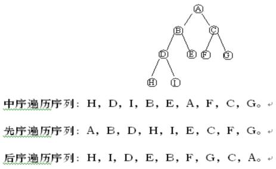
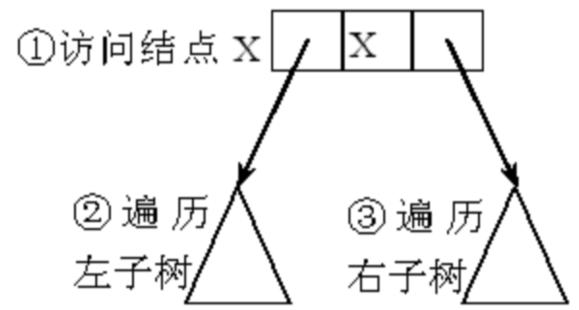
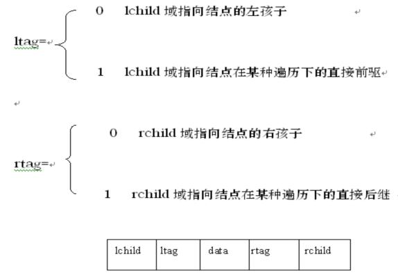

第六章 树和二叉树
§6.3 遍历二叉树和线索二叉树
6.3.1 遍历二叉树
1、概念：
二叉树的遍历是指按照某种顺序访问二叉树中的每个结点，使每个结点被访问一次且仅被访问一次。即：不重复地访问二叉树的所有结点。
遍历是二叉树中经常要用到的一种操作。因为在实际应用问题中，常常需要按一定顺序对二叉树中的每个结点逐个进行访问，查找具有某一特点的结点，然后对这些满足条件的结点进行处理。遍历也是二叉树各种操作的基础，可以在遍历过程中对结点进行各种操作通过一次完整的遍历，可使二叉树中结点信息由非线性排列变为某种意义上的线性序列。也就是说，遍历操作使非线性结构线性化。
由二叉树的定义可知，一棵由根结点、根结点的左子树和根结点的右子树三部分组成。因此，只要依次遍历这三部分，就可以遍历整个二叉树。若以D、L、R分别表示访问根结点、遍历根结点的左子树、遍历根结点的右子树，则二叉树的遍历方式有六种：DLR、LDR、LRD、DRL、RDL和RLD。如果限定先左后右，则只有前三种方式，即DLR（称为先序遍历）、LDR（称为中序遍历）和LRD（称为后序遍历）。
一个非空的二叉树由根结点及左、右子树这三个基本部分组成，因此若能依次遍历这三部分，便是遍历了整个二叉树。
在任一给定结点上，可以按某种次序执行三个操作：访问结点本身，遍历该结点左子树，遍历该结点右子树，操作排列次序：
① 左、根、右；③ 根、左、右；⑤ 左、右、根；
② 右、根、左；④ 根、右、左；⑥ 右、左、根；
由于实际问题一般都是要求左子树较右子树先遍历，故只采用其中①、③、⑤三种遍历次序，分别称为中序遍历、先序遍历和后序遍历。
2、三种遍历次序以递归的形式实现：
(1) 中序（Inorder）遍历(LDR)
若遍历的二叉树为空，执行空操作；否则依次执行下列操作：
中序遍历左子树；
访问根结点；
中序遍历右子树。
(2) 先序（Preorder）遍历(DLR)
若遍历的二叉树为空，执行空操作；否则依次执行下列操作： v访问根结点；
先序遍历左子树；
先序遍历右子树。
(3) 后序（Postorder）遍历(LRD)
若遍历的二叉树为空，执行空操作；否则依次执行下列操作：
后序遍历左子树；
后序遍历右子树；
访问根结点。
下图5.9 二叉树遍历

中序遍历递归算法
void inorder(btree *p)
{
if (p！=NULL)
{
inorder(p->left);
printf("%d",p->data);
inorder(p->right);
}
}
3、二叉树的非递归遍历
通过对表达式的二叉树遍历，理解二叉树的遍历过程及遍历的递归执行过程。仿照递归算法执行过程，利用堆栈将递归算法改写成非递归的形式。下面以先序遍历为例来具体说明。
图示为二叉树上的任一结点X,以及它的左子树XL和右子树XR。
假设t是指向结点X的指针。

非递归先序遍历二叉树上任一结点X的主要操作：
(1) 访问结点X；
(2) 结点X的右指针进栈；
(3) 若XL不空，沿X的左指针遍历XL ；
(4) 从栈中取出X的右指针；
(5) 若XR不空，沿X的右指针遍历XR
P130 算法6.2 6.3 描述了采用非递归方式中序遍历二叉树的过程。
遍历二叉树算法：其时间复杂度为O(n)，所需辅助空间为遍历过程中栈的最大容量，即树的深度，最坏情况为n，则空间复杂度也为O(n)，遍历时也可以采用其他存储结构，如带标志域的三叉链表等。
6.3.2 线索二叉树
1、概念
通过前面介绍的二叉树可知，遍历二叉树实际上就是将树中所有结点排成一个线性序列(即非线性结构线性化)，在这样的线性序列中，很容易求得某个结点在某种遍历下的直接前驱和后继。然而，有时我们希望不进行遍历就能快速找到某个结点在某种遍历下的直接前驱和后继，这样，就应该把每个结点的直接前驱和直接后继保存下来。为了做到这一点，可以在原来的二叉链表结点中，再增加两个指针域，一个指向前驱，一个指向后继，但这样做将会浪费大量存贮单元，存贮空间的利用率相当低(一个结点中有4个指针，1个指左孩子，1个指右孩子，1个指前驱，1个指后继)，而原来的左、右孩子域有许多空指针又没有利用起来。
为了不浪费存存贮空间，我们利用原有的孩子指针为空时来存放直接前驱和后继，这样的指针称为“线索”，加线索的过程称为线索化，加了线索的二叉树，称为线索二叉树，对应的二叉链表称为线索二叉链表。 在线索二叉树中，由于有了线索，无需遍历二叉树就可以得到任一结点在某种遍历下的直接前驱和后继。但是，我们怎样来区分孩子指针域中存放的是左、右孩子信息还是直接前驱或直接后继信息呢?为此，在二叉链表结点中，还必须增加两个标志域ltag、rtag。
ltag和rtag定义如下：

这样，二叉链表中每个结点还是有5个域，但其中只有2个指针，较原来的4个指针要方便。增加线索后的二叉链表结点结构可描述如下：
在线索树上进行遍历，只要先找到序列中的第一个结点，然后依次找结点后继直至其后继为空为止。
2、在线索树中找后继结点：
1）、中序遍历情况下：结点的后继是遍历其右子树时访问的第一个结点，即右子树中最左下的结点；结点的前驱是：若其坐标志为“1”，则左链为线索，指示其前驱，否则遍历左子树时最后访问的一个结点（左子树中最右下的结点）为其前驱。
可见，在中序线索二叉树上遍历二叉树，方便的多，其时间复杂度为O（n），但算法不需要设栈，因此，若在某程序中所用二叉树需经常遍历或查找结点在遍历所得线性序列中的前驱和后继，则应采用线索链表作存储结构。
3、线索二叉树的遍历
在线索二叉树中，结点的结构可以定义为如下形式：
typedef char elemtype;
typedef struct BiThrNode {
elemtype data;
struct BiThrNode *lchild;
struct BiThrNode *rchild;
unsigned ltag:1;
unsigned rtag:1;
}BiThrNodeType,*BiThrTree;
以中序二叉树为例，说明根据限线索进行遍历的过程：
1）、从二叉树的根结点开始，严左链找到叶子结点，该叶子结点即为中序序列的第一个结点；
2）、从中序序列的第一个结点开始扫描，依次找出中序序列中的后继，其规则为：
若当前结点的右标志域为1，则当前结点的指针值为其后续的存储序号； ②、结点的右指针域不空，则沿着右子树的左链进行搜索，直到发现某个结点的左标志值为1且左指针不空为止，该结点即为当前结点的后续。 算法：P134 6.5
4、线索二叉树的构造：
由于线索化的实质是将二叉链表中的空指针改为指向前驱或后继的线索，而前驱或后继的信息只有遍历时才能找到，因此线索化的过程即为在遍历的过程中修改空指针的过程。因此，为了在二叉链表中生成中序遍历顺序的线索，只需在中序遍历过程中，将访问根结点用以下操作代替：
1）、若上次访问到的结点的右指针为空，则将当前访问到的结点序列填入，并置右标志域为1；
2）、若上次访问到的结点的左指针为空，则将上次访问到的结点序列填入，并置左标志域为1；
由于中序遍历序列中第一个结点无前驱，因此，该结点的左指针仍为空。
|